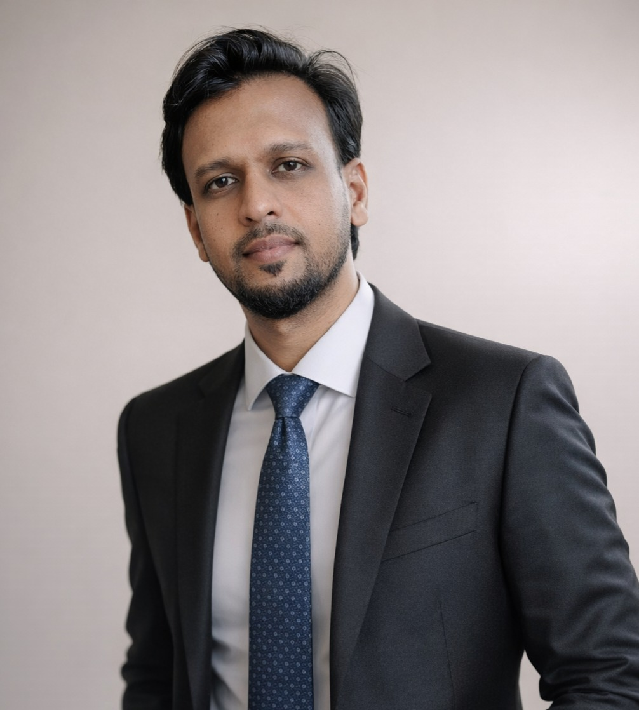

Specializing in Optimization Algorithms, Combinatorial Testing, and Software Testing with extensive experience in academic teaching, research, and industry collaboration.
I am a dedicated senior lecturer and researcher at Universiti Malaysia Perlis (UniMAP) with a strong background in Computer Engineering. My research focuses on Optimization Algorithms, Combinatorial Testing, and Software Testing. I am passionate about bridging the gap between academic research and practical applications in the field of computer engineering.
Thesis Title: A Self-Adapting Ant Colony Optimization using Fuzzy Logic (ACOF) for Combinatorial Test Suite Generation.
Thesis Title: A T-Way Test Suite Generation Strategy for Sequence-Based Interaction Testing.
In modern software engineering, applications have too many interacting parameters. Testing every single combination (Exhaustive Testing) causes a "Combinatorial Explosion" that costs companies billions in wasted time and resources. T-Way Testing solves this by intelligently sampling interactions, drastically reducing test cases while maintaining high fault-detection rates.
However, finding the absolute smallest T-Way test suite is mathematically proven to be an NP-Hard problem. Traditional computation fails here. That is why my research applies Metaheuristic Optimization (like Swarm Intelligence). I build algorithms that act as AI "search parties" to navigate millions of possibilities, mathematically balancing exploration and exploitation to find the most perfectly optimized test suite.
Imagine testing an app with 3 parameters, each with 2 values:
A successful algorithm must actively balance two opposing forces: Exploration (searching new areas) and Exploitation (refining a known good area). If it explores too much, it wastes time. If it exploits too early, it suffers from premature convergence (getting trapped).
Watch how different strategies perform in a simulated solution space containing multiple "good" solutions, but only one "best" solution.
The Sequence Bottleneck: Traditional t-way strategies assume all software inputs happen simultaneously. But in the real world—like with alarms, control systems, and reactive hardware—the exact sequence of inputs is the difference between success and failure. Exhaustively testing these sequences is computationally paralyzing; just 5 events create 120 unique test sequences.
The Engineering Breakthrough: I engineered the SCATS strategy. Building upon existing research, I adapted and implemented a "Sequence Tree" data structure to efficiently store and search uncovered sequence tuples. This was paired with a greedy Test Case Generator that evaluates partial test candidates to systematically build the optimal sequence array.
The Big Win (Impact): SCATS achieved a massive 92.5% reduction in required test cases compared to exhaustive testing. When benchmarked against top-tier global strategies (including T-SEQ, U, Ur, and BA), SCATS consistently produced tighter, highly optimized test suites, dominating at higher event scales.
The NP-Hard Trap: Finding the smallest possible test suite is an NP-Hard problem. While the Ant Colony System (ACS) is a brilliant metaheuristic, it is historically rigid. It uses a fixed number of ants and a static probability rule for searching. This rigidity forces the algorithm to blindly guess when to explore or exploit, leading to wasted execution time and premature convergence.
The "Self-Aware" Swarm: I developed ACOF to give the swarm a brain. By hybridizing the Ant Colony algorithm with a Mamdani-Fuzzy Inference System (FIS), the algorithm actively analyzes its test coverage and dynamically dictates exactly how many ants to deploy, mathematically shifting behavior between wide Exploration and aggressive Exploitation.
The Big Win (Impact): To prove ACOF's superiority, I ran rigorous statistical validations, benchmarking it against a staggering 26 different computational and metaheuristic strategies. ACOF not only generated highly competitive optimal test suite sizes, but the dynamic fuzzy controller slashed algorithm execution time by up to 79.1%.
The Evolution (FRGS): Funded by a RM124k+ FRGS Grant, our team is developing a new Phase Transition Controller for Sand Cat Swarm Optimization (SCSO). By integrating Reinforcement Learning (SARSA), we enable the AI swarm to dynamically learn and shift between broad "Exploration" and targeted "Exploitation," preventing the algorithm from getting trapped in premature convergence.
The Industry Application (IMaP): Backed by a RM100k IMaP Grant, we partnered with Thursinar Corporation Sdn Bhd to deploy these testing algorithms in large-scale solar harvesting systems. By maximizing test coverage and tuning data interpretation, our tools are designed to eliminate false-positive power generation alerts, ensuring efficient energy production and saving thousands in unnecessary maintenance costs.
The Real-World Translation: Our research does not just live in academic journals. The optimization engine funded by these grants directly powers SandCatGo—a live, interactive software testing tool featured in the next tab, bridging the gap between theoretical algorithms and deployable software.
Experience the Sand Cat Swarm Optimization (SCSO) algorithm in action. Input your parameters below to generate an optimized T-Way test suite.
Note: This live tool is hosted on a cloud server. If it has been inactive, it may take 30 to 50 seconds to wake up and load.
Title: A New Phase Transition Controller in Sand Cat Swarm Optimization for Combinatorial Test Suite Generation
Title: Design and Development of Testing Tool for Solar Harvesting Application
Title: Design and Dev. of a Multi-factorial Sand Cat Swarm Optimization Algorithm for T-Way Testing.
Title: A New Phase Transition Controller in SCSO for Combinatorial Test Suite Generation.
Title of Work: SANDCATGO: An Intelligent Online Tool for Combinatorial T-Way Test Suite Generation Based on Sand Cat Swarm Optimization
Title of Work: FUZZY-MEDCARE: Fuzzy Logic based Health Monitoring and Emergency Detection For Home Bedridden Patients
Title of Work: Self-Sustained Active Water-Cooling System For PV Modules Using Irradiance-Based Control
Title of Work: Intelligent Parcel Delivery and Notification System for Apartment House
Title of Work: A Self-Adapting Ant Colony Optimization Algorithm using Fuzzy Logic (ACOF) for Combinatorial Test Suite Generation
Anugerah Perkhidmatan Cemerlang
Fakulti Kejuruteraan & Teknologi Elektronik
Anugerah Projek Komuniti (UniMAP for Society)
Anugerah Project Komuniti (UniMAP for Society)
Faculty of Electronic Engineering & Technology (FKTEN)
Universiti Malaysia Perlis (UniMAP)
Pauh Putra Campus, 02600 Arau, Perlis, Malaysia.